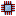
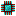
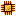

Create: Applied Kinetics
附属模组
添加了 能量传输器 （Energy Provider）…
这是什么
添加了 能量传输器 （Energy Provider） ，一种可将机械能量传输进 能源接收器 的方块。
命名空间：
createappliedkinetics 1.20.1 版本：本页物品与配方直接取自该版本的 jar。全部物品13
能量传输器createappliedkinetics:energy_provider

Incomplete Calculation Processorcreateappliedkinetics:incomplete_calculation_processor
没有工作台/机器配方
Incomplete Calculation Processor Presscreateappliedkinetics:incomplete_calculation_processor_press
没有工作台/机器配方

Incomplete Engineering Processorcreateappliedkinetics:incomplete_engineering_processor
没有工作台/机器配方
Incomplete Engineering Processor Presscreateappliedkinetics:incomplete_engineering_processor_press
没有工作台/机器配方

Incomplete Logic Processorcreateappliedkinetics:incomplete_logic_processor
没有工作台/机器配方
Incomplete Logic Processor Presscreateappliedkinetics:incomplete_logic_processor_press
没有工作台/机器配方
Incomplete Printed Calculation Circuitcreateappliedkinetics:incomplete_printed_calculation_circuit
没有工作台/机器配方
Incomplete Printed Engineering Circuitcreateappliedkinetics:incomplete_printed_engineering_circuit
没有工作台/机器配方
Incomplete Printed Logic Circuitcreateappliedkinetics:incomplete_printed_logic_circuit
没有工作台/机器配方
Incomplete Silicon Presscreateappliedkinetics:incomplete_silicon_press
没有工作台/机器配方
Incomplete Silicon Printcreateappliedkinetics:incomplete_silicon_print
没有工作台/机器配方